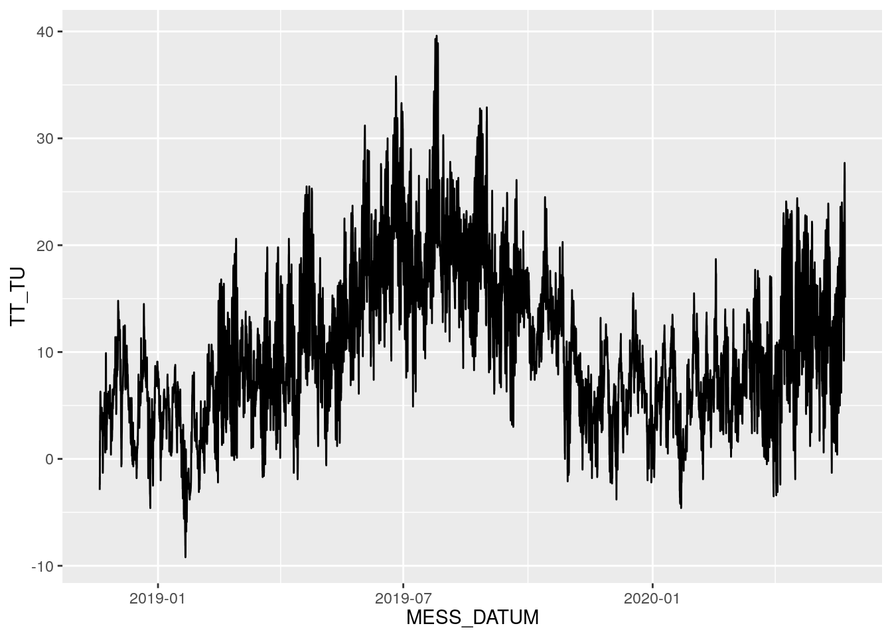
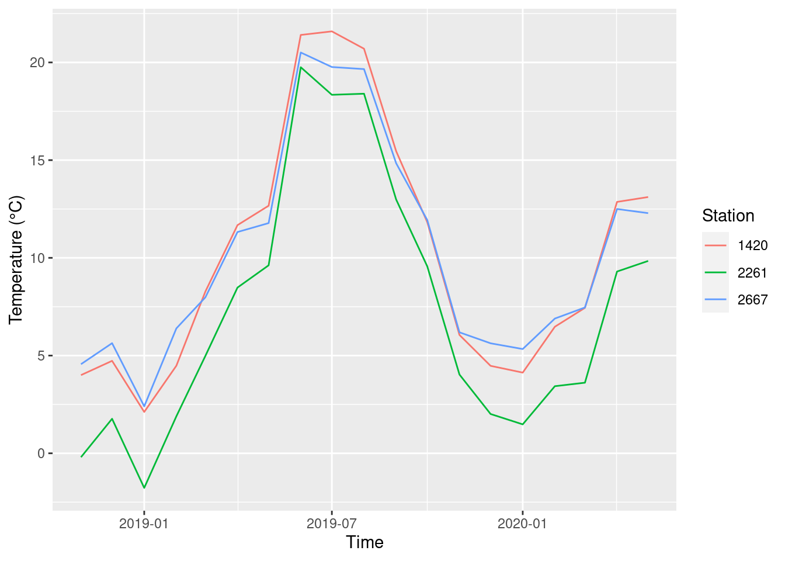

Kapitel 8 Tidyverse
-
Kernpakete aus
tidyversebenennen -
ein einfaches Workflow (Daten einlesen, zusammenfassen, darstellen) mit
tidyversedurchführen -
Funktionen des Pakets
dplyrfür Datentransformation anwenden
tidyverse ist eine Sammlung von R-Pakete, die explizit für Datenanalyse entwickelt wurden (https://www.tidyverse.org/). tidyverse versucht durch gemeinsame Philosophie in Design, Grammatik und Datenstruktur die Datenanalyse zu erleichtern (https://design.tidyverse.org/). Auch wenn tidyverse auf den ersten Blick etwas fremd erscheint, es ist ein Teil von R, kein eigenes Universum. Es ist also völlig in Ordnung, R-Basisfunktionen mit Funktionen aus tidyverse zu mischen.
Das wichtigste Einführungsbuch zu tidyverse ist sicherlich R4DS: “R for Data Science” (Wickham and Grolemund 2017), das Sie kostenlos online lesen können (https://r4ds.had.co.nz/).
8.1 Grundpakete
tidyverse enthält folgende Grundpakete, die alle installiert werden, wenn Sie install.packages('tidyverse') eingeben.
| Paketname | Kurzbeschreibung |
|---|---|
ggplot2 |
Visualisierung |
dplyr |
Datentransformation |
tidyr |
Datenbereinigung |
readr |
Daten einlesen |
purrr |
Funktionale Programmierung (Funktionen auf Objekte anwenden) |
tibble |
Erweiterung von data.frame |
stringr |
Funktionen für Strings, d.h. Textvariablen |
forcats |
Funktionen für factor |
Jedes dieser Pakete hat ein Cheat Sheet, eine übersichtliche Zusammenstellung der Funktionen des Pakets. Sie bekommen die Cheet Sheats über die tidyverse-Seite (https://www.tidyverse.org/packages/), indem Sie auf das jeweilige Paket klicken und zum Abschnitt ‘Cheatsheet’ scrollen.
8.2 Der Workflow
8.2.1 Daten einlesen
Sie kennen bereits die sehr umfangreiche Funktion read.table() zum Einlesen der Daten. Die Funktion read_delim() ist die allgemeinste Funktion der read_* Familie aus readr in tidyverse; read_csv() und read_csv2() sind jeweils für komma- und strichpunkt-getrennte Datensätze gedacht. Man könnte berechtigterweise fragen, warum eine neue Funktion für etwas erfinden, was es schon gibt. Die Autoren von tidyverse versprechen Konsistenz und Geschwindigkeit. Ersteres war schon immer ein Problem von R, da es nicht von Computerspezialisten, sondern von Anwendern erfunden wurde. Daher ist eine Vereinheitlichung durch tidyverse mehr als willkommen. Und Geschwindigkeit ist spätestens bei größeren Datensätzen ein wichtiger Punkt.
Wir sehen uns erneut Daten des Deutschen Wetterdienstes an, wie im Kapitel 5. Nur diesmal sind es Stundenwerte für relative Luftfeuchte (%) und Lufttemperatur (°C). Die Daten von drei Wetterstationen, nämlich Hof, Frankfurt und Köln-Bonn, befinden sich in der Datei Drei_Stationen.csv Beim Einlesen zeigt Ihnen read_delim() bereits, welche Spalten und welche Datentypen es erkennt, mit trim_ws = T werden Leerzeichen aus Spalten entfernt.
## Parsed with column specification:
## cols(
## STATIONS_ID = col_double(),
## MESS_DATUM = col_double(),
## QN_9 = col_double(),
## TT_TU = col_double(),
## RF_TU = col_double(),
## eor = col_character()
## )Eine weitere Kontrolle bietet die Funktion print(), die das eingelesene Ergebnis übersichtlich (und im Notebook interaktiv) darstellt. Sie müssen hier nicht mehr head() verwenden, da grundsätzlich nur die ersten 10 Zeilen dargestellt werden.
## # A tibble: 39,600 x 6
## STATIONS_ID MESS_DATUM QN_9 TT_TU RF_TU eor
## <dbl> <dbl> <dbl> <dbl> <dbl> <chr>
## 1 2261 2018111900 3 -2.8 99 eor
## 2 2261 2018111901 3 -2.5 100 eor
## 3 2261 2018111902 3 -2.3 100 eor
## 4 2261 2018111903 3 -2 100 eor
## 5 2261 2018111904 3 -1.9 99 eor
## 6 2261 2018111905 3 -2.1 99 eor
## 7 2261 2018111906 3 -1.8 99 eor
## 8 2261 2018111907 3 -1.5 99 eor
## 9 2261 2018111908 3 -1.1 99 eor
## 10 2261 2018111909 3 -0.6 97 eor
## # … with 39,590 more rowsDas gleiche Ergebnis bekommen Sie auch ohne print(), wenn Sie wie gewohnt den Namen des Objekts tippen.
## # A tibble: 39,600 x 6
## STATIONS_ID MESS_DATUM QN_9 TT_TU RF_TU eor
## <dbl> <dbl> <dbl> <dbl> <dbl> <chr>
## 1 2261 2018111900 3 -2.8 99 eor
## 2 2261 2018111901 3 -2.5 100 eor
## 3 2261 2018111902 3 -2.3 100 eor
## 4 2261 2018111903 3 -2 100 eor
## 5 2261 2018111904 3 -1.9 99 eor
## 6 2261 2018111905 3 -2.1 99 eor
## 7 2261 2018111906 3 -1.8 99 eor
## 8 2261 2018111907 3 -1.5 99 eor
## 9 2261 2018111908 3 -1.1 99 eor
## 10 2261 2018111909 3 -0.6 97 eor
## # … with 39,590 more rowsIn diesem Datensatz sind folgende Parameter (Spalten) enthalten (s. Datensatzbeschreibung des DWDs)
| Parameter | Beschreibung |
|---|---|
| STATIONS_ID | Stationsidentifikationsnummer |
| MESS_DATUM | Zeitstempel im Format yyyymmddhh |
| QN_9 | Qualitätsniveau der nachfolgenden Spalten |
| TT_TU | Lufttemperatur in 2m Höhe °C |
| RF_TU | relative Feuchte % |
| eor | Ende data record |
## [1] "spec_tbl_df" "tbl_df" "tbl" "data.frame"Das Objekt temp_humid ist ein sogen. Tibble, ein data.frame mit “modernem” Verhalten. Z.B. gibt die Funktion print() nur die ersten 10 Zeilen aus, die Datentypen in den Spalten werden in hellgrau zwischen ‘<>’ mit angegeben etc. Mehr zu Tibbles finden Sie in Kapitel 10 “Tibbles” in R4DS.
Ein weiteres Paket, dass zwar nicht zum Kern von tidyverse gehört, jedoch trotzdem extrem nützlich ist, heißt lubridate. Es hilft, Text in richtige Datums-Objekte zu transformieren (ohne sich die kryptischen Datumsformate von R merken zu müssen). Wir transformieren die Spalte temp_humid$MESS_DATUM in ein richtiges Datum mit Uhrzeit.
## # A tibble: 39,600 x 6
## STATIONS_ID MESS_DATUM QN_9 TT_TU RF_TU eor
## <dbl> <dttm> <dbl> <dbl> <dbl> <chr>
## 1 2261 2018-11-19 00:00:00 3 -2.8 99 eor
## 2 2261 2018-11-19 01:00:00 3 -2.5 100 eor
## 3 2261 2018-11-19 02:00:00 3 -2.3 100 eor
## 4 2261 2018-11-19 03:00:00 3 -2 100 eor
## 5 2261 2018-11-19 04:00:00 3 -1.9 99 eor
## 6 2261 2018-11-19 05:00:00 3 -2.1 99 eor
## 7 2261 2018-11-19 06:00:00 3 -1.8 99 eor
## 8 2261 2018-11-19 07:00:00 3 -1.5 99 eor
## 9 2261 2018-11-19 08:00:00 3 -1.1 99 eor
## 10 2261 2018-11-19 09:00:00 3 -0.6 97 eor
## # … with 39,590 more rows8.2.2 Daten zusammenfassen
Die drei Wetterstationen haben folgende IDs:
Ich möchte wissen, wie viele Messpunkte es pro Station gibt:
## # A tibble: 1 x 1
## n
## <int>
## 1 39600Die Zeichenkombination %>% heißt Pipe-Operator (pipe) und wird als ‘und dann’ gelesen (then). Der Ausdruck temp_humid %>% count() heißt also: nimm temp_humid und dann zähle die Einträge. Der Pipe-Operator ist die Kernphilosophie von tidyverse und wird Ihnen überall begegnen. Der Operator stammt aus dem Paket magrittr (https://magrittr.tidyverse.org/). Seine Hauptaufgabe ist es, den Code übersichtlicher und besser lesbar zu machen (vielleicht nicht gleich zu Beginn der Lernkurve aber schon sehr bald 😄).
Die Funktion count() gehört zum Paket dplyr, das für Datentransformationen zuständig ist. Dieses Paket enthält 5 Grundfunktionen (alle nach Verben benannt 😄):
| Funktion | Bedeutung |
|---|---|
filter() |
Wähle Daten anhand ihrere Werte |
arrange() |
Sortiere Zeilen |
select() |
Wähle Variablen anhand ihrere Namen |
mutate() |
Erstelle neue Variablen als Funktionen vorhandener Variablen |
summarize() |
Fasse Daten zusammen |
Ich möchte nun wissen, wie viele Messpunkte es für Köln-Bonn gibt. tidyverse ist konsistent: jeder Aufruf einer Funktion aus dplyr gibt ein tiblle zurück (und nicht mal data.frame mal Vektor).
## # A tibble: 1 x 1
## n
## <int>
## 1 132008.2.3 Daten plotten
Wir wählen nur die Station Köln-Bonn und plotten die Stundenwerte der Temperatur mit dem Paket ggplot2.
## # A tibble: 13,200 x 6
## STATIONS_ID MESS_DATUM QN_9 TT_TU RF_TU eor
## <dbl> <dttm> <dbl> <dbl> <dbl> <chr>
## 1 2667 2018-11-19 00:00:00 3 -2.9 69 eor
## 2 2667 2018-11-19 01:00:00 3 -1.7 78 eor
## 3 2667 2018-11-19 02:00:00 3 -2.4 82 eor
## 4 2667 2018-11-19 03:00:00 3 0.2 89 eor
## 5 2667 2018-11-19 04:00:00 3 1.7 84 eor
## 6 2667 2018-11-19 05:00:00 3 0.3 90 eor
## 7 2667 2018-11-19 06:00:00 3 3.4 84 eor
## 8 2667 2018-11-19 07:00:00 3 4.1 81 eor
## 9 2667 2018-11-19 08:00:00 3 3.9 80 eor
## 10 2667 2018-11-19 09:00:00 3 4.8 78 eor
## # … with 13,190 more rows
Sie werden sehr bald schon das Paket ggplot2 nicht mehr missen wollen. Es erstellt mit wenig Aufwand sehr ansehnliche Grafiken. Natürlich müssen Sie, wie in Base-R auch, für professionelle Grafiken nacharbeiten.
ggplot2 folgt einer sogen. Grafikgrammatik (grammer of graphics), indem es seine Grafiken mit ‘+’ aufbaut. Erst sagt man in der Funktion ggplot() welchen Datensatz man plotten möchte, was auf die x- und y-Achse kommt und ob man z.B. Farbe für Gruppen in Daten möchte. All diese sichtbaren Elemente nennt man Ästhetiken (Parameter aes). Erst wenn diese ‘Formalien’ geklärt sind, sagt man, welche Form der Darstellung man möchte. Im oberen Beispiel ist es ein Linienplot. Alle Darstellungsarten in ggplot2 beginnen mit geom_*() und sind daher konsistent benannt. Die Informationen zu Daten, x-, y-Achse etc. werden an die geom_*()-Funktionen von der Mutterfunktion ggplot() weiter vererbt. Daher sind die Klammern in geom_line() leer.
Wir wollen nun die Monatsmittelwerte für die Temperatur berechnen und diese darstellen. Als erstes erstellen wir zwei neue Spalten, die jeweils das Jahr und den Monat beinhalten. Die beiden neuen Spalten werden am Ende von temp_humid angehängt.
temp_humid <- mutate(temp_humid,
year = year(temp_humid$MESS_DATUM),
month = month(temp_humid$MESS_DATUM))
temp_humid## # A tibble: 39,600 x 8
## STATIONS_ID MESS_DATUM QN_9 TT_TU RF_TU eor year month
## <dbl> <dttm> <dbl> <dbl> <dbl> <chr> <dbl> <dbl>
## 1 2261 2018-11-19 00:00:00 3 -2.8 99 eor 2018 11
## 2 2261 2018-11-19 01:00:00 3 -2.5 100 eor 2018 11
## 3 2261 2018-11-19 02:00:00 3 -2.3 100 eor 2018 11
## 4 2261 2018-11-19 03:00:00 3 -2 100 eor 2018 11
## 5 2261 2018-11-19 04:00:00 3 -1.9 99 eor 2018 11
## 6 2261 2018-11-19 05:00:00 3 -2.1 99 eor 2018 11
## 7 2261 2018-11-19 06:00:00 3 -1.8 99 eor 2018 11
## 8 2261 2018-11-19 07:00:00 3 -1.5 99 eor 2018 11
## 9 2261 2018-11-19 08:00:00 3 -1.1 99 eor 2018 11
## 10 2261 2018-11-19 09:00:00 3 -0.6 97 eor 2018 11
## # … with 39,590 more rowsJetzt können wir einen neuen Datensatz mit den Mittelwerten erstellen. Dafür gruppieren wir erst einmal die Daten nach STATIONS_ID, year und month. Die Mittelwerte sollen ja je Station, Jahr und Monat berechnet werden.
by_month <- group_by(temp_humid, STATIONS_ID, year, month)
monthly_means <- summarize(by_month, mean_T = mean(TT_TU), mean_RH = mean(RF_TU))## `summarise()` regrouping output by 'STATIONS_ID', 'year' (override with `.groups` argument)## # A tibble: 57 x 5
## # Groups: STATIONS_ID, year [9]
## STATIONS_ID year month mean_T mean_RH
## <dbl> <dbl> <dbl> <dbl> <dbl>
## 1 1420 2018 11 4.00 79.7
## 2 1420 2018 12 4.73 83.7
## 3 1420 2019 1 2.12 79.3
## 4 1420 2019 2 4.48 74.1
## 5 1420 2019 3 8.28 68.5
## 6 1420 2019 4 11.7 61.0
## 7 1420 2019 5 12.7 67.5
## 8 1420 2019 6 21.4 60.6
## 9 1420 2019 7 21.6 55.6
## 10 1420 2019 8 20.7 65.6
## # … with 47 more rowsDie Struktur von monthly_means zeigt uns, dass es sich um gruppierte Daten handelt.
## tibble [57 × 5] (S3: grouped_df/tbl_df/tbl/data.frame)
## $ STATIONS_ID: num [1:57] 1420 1420 1420 1420 1420 1420 1420 1420 1420 1420 ...
## $ year : num [1:57] 2018 2018 2019 2019 2019 ...
## $ month : num [1:57] 11 12 1 2 3 4 5 6 7 8 ...
## $ mean_T : num [1:57] 4 4.73 2.12 4.48 8.28 ...
## $ mean_RH : num [1:57] 79.7 83.7 79.3 74.1 68.5 ...
## - attr(*, "groups")= tibble [9 × 3] (S3: tbl_df/tbl/data.frame)
## ..$ STATIONS_ID: num [1:9] 1420 1420 1420 2261 2261 ...
## ..$ year : num [1:9] 2018 2019 2020 2018 2019 ...
## ..$ .rows : list<int> [1:9]
## .. ..$ : int [1:2] 1 2
## .. ..$ : int [1:12] 3 4 5 6 7 8 9 10 11 12 ...
## .. ..$ : int [1:5] 15 16 17 18 19
## .. ..$ : int [1:2] 20 21
## .. ..$ : int [1:12] 22 23 24 25 26 27 28 29 30 31 ...
## .. ..$ : int [1:5] 34 35 36 37 38
## .. ..$ : int [1:2] 39 40
## .. ..$ : int [1:12] 41 42 43 44 45 46 47 48 49 50 ...
## .. ..$ : int [1:5] 53 54 55 56 57
## .. ..@ ptype: int(0)
## ..- attr(*, ".drop")= logi TRUEDa wir aber mit den Daten weiter rechnen wollen, ist es besser, die Gruppierung wieder aufzugeben. Es könnte sonst später Fehlermeldungen geben.
Um die Daten als Zeitreihen zu plotten, erstellen wir noch eine ordentliche Zeit-Spalte. Die Funktion parse_date_time() kann aus Character richtige Datums-Zeitobjekte erstellen. Sie ist allgemeienr als die oben verwendete ymd() Funktion, da man hier das Format explizit angeben kann. In unserem Fall ist das Format ‘ym’ für Jahr und Monat.
monthly_means <- monthly_means %>%
mutate(my_date = parse_date_time(paste0(monthly_means$year,
monthly_means$month), 'ym', tz = 'CET'))ggplot(data = monthly_means, aes(x = my_date, y = mean_T,
col = factor(STATIONS_ID))) +
geom_line() +
labs(x = 'Time', y = 'Temperature (°C)', color = 'Station')
Wir werden in eine spätere Kapitel auf ggplot2 genauer eingehen. Fürs Erste soll es als Appetithappen reichen 🍰.
8.3 Weiterführende Literatur und Videos
R4DS: Kapitel 5 “Data transformation”, 11 “Data import”
Eine live Analyse des Hauptautors von
tidyverse, Hadley Wickham. Empfehlenswert, auch wenn er viel zu schnell tippt 😄.